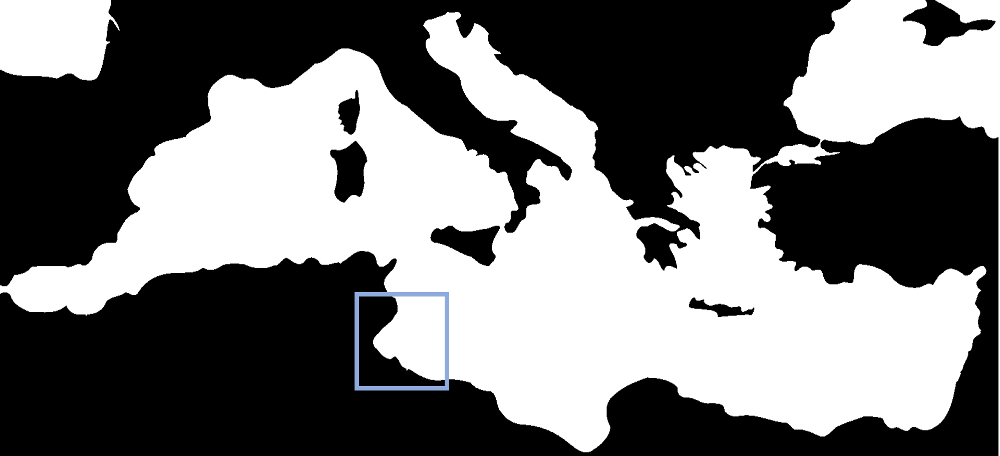
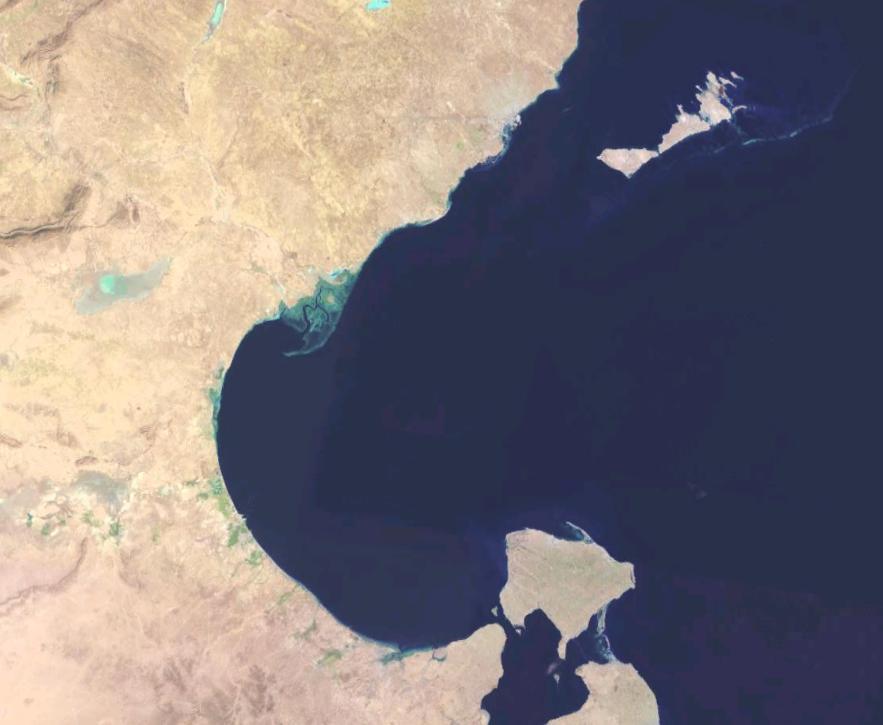
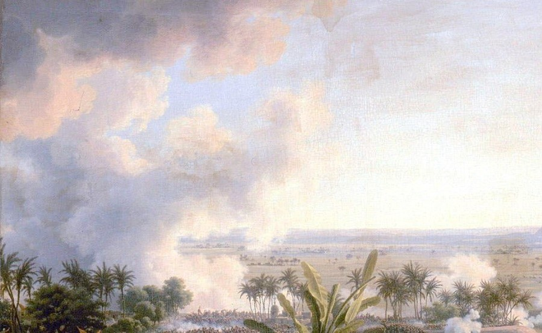

Localisation du golfe de Gabès en Méditerrannée
Le golfe de Gabès a longtemps été un mystère pour la communauté scientifique :
Comment expliquer une telle richesse de vie marine ?
Le golfe est situé à l'est de la Méditerrannée, une mer semi-fermée
oligotrophe, c'est à dire pauvre en nutriments.
Les substances nutritives à la base de la vie marine proviennent des eaux de surface venues de l'Atlantique. Elles entrent par le détroit de Gibraltar et se dirigent vers l'est du bassin Méditerrannéen. Les nutriments sont consommés en chemin, si bien que les eaux au large de la Tunisie sont finalement très pauvres.
Pourtant, on observe une abondance de vie marine dans le golfe de Gabès et une incroyable diversité d'espèces.
En 1970, Cousteau s'intéressait déjà à ce trésor de biodiversité !
Aujourd'hui, de nombreuses campagnes scientifiques étudient la région et une récente étude à montrer que l'écosystème du golfe de Gabès reposait sur de toutes petites créatures :
les ultraplanctons, qui se nourrissent de lumière et de quelques nutriments, et sont rapidement consommées par de plus grandes espèces de planctons,
elles-mêmes très vite mangées par d'autres planctons ou de petits poissons, formant ainsi une chaîne alimentaire efficace, soldée par la décomposition de toutes ces petites bêtes.

Vue satellitaire du golfe de Gabès
Le recyclage rapide des nutriments expliquerait la présence de cet oasis de vie marine perdu dans un désert oligotrophe.
En Tunisie, l'essentiel de la pêche repose sur les ressources du golfe de Gabès. Les poissons nourrissent et occupent la région : la pêche en est le principal pourvoyeur d'emploi. Les techniques de pêche traditionnelles sont très respectueuses de l'environnement. Les hommes utilisent des pièges, les charfias, des blocs de pierre troués sur le côté, les gargoulettes, ou encore des filets. Mais la pêche à la crevette est quant à elle réalisée à bord de chalutiers qui raclent les fonds marins, vident le golfe de Gabès et détruisent tout sur leur passage.
Pourtant, les chaluts ne sont rien en comparaison de ce qui attendait Gabès ! En 1972, le gouvernement tunisien industrialise la région. Il implante des usines de traitement du phosphate, à l'époque très lucratives. Le phosphate est notamment exporté en Europe, où il participe à la confection d'engrais chimiques pour l'agriculture.
Ces usines polluent le rivage et la mer. Elles y déversent leurs déchets, dont de terribles quantités de phosphogypse. Ce poison ravage la posidonie, une herbe marine qui offre aux poissons un abri où pondre et élever leurs petits. Sans cette nursery marine, l'écosystème décline ;
les poissons désertent le golfe. Le paradis de pêche n'est plus qu'un souvenir dans l'esprit des pêcheurs qui abandonnent leur activité et tentent de se reconvertir en ville.
Mais sur terre aussi, l'enfer s'avance.

Extrait de La bataille des Pyramides, 1808, par Louis-François Baron Lejeune.
Le littoral est bordé de palmeraies, étendues sur un ensemble d'oasis cultivé de manière intensive.
On y récoltait les dattes, grenades et abricots, des carottes, navets et des salades... L'élevage fournissait du lait, de la viande et même du miel. Ces produits emplissaient le garde-à-manger de la région et étaient parfois même exportés.
La beauté des oasis amenait aussi des touristes.
Mais aujourd'hui,
les palmeraies sont en souffrance. Elles sont brûlées par les gaz relâchés par les usines de traitement du phosphate.
Les gazs menacent aussi la santé des hommes et des femmes, qui développent des maladies respiratoires. Selon les données collectées par la plateforme et base de données "Our world in Data", 5077 tunisiens seraient morts en 2016 à cause de la pollution de l’air. Les usines de phosphate sont un désastre social et économique, mais il coûterait trop cher à la Tunisie de les démanteler. Et si le gouvernement tunisien regrette aujourd'hui ces usines, il ne reconnaît pas les ravages qu'elles causent aujourd'hui et interdit même l'accès aux scientifiques venus étudier les désastres sanitaires ou l'impact écologique des rejets industriels.
Rien n'est fait pour sauver Gabès, les populations souffrent et s'indignent ; des associations sont créées pour faire entendre leurs revendications.
Et à notre échelle ?
Nous pouvons limiter notre consommation de produits chimiques qui détruisent les régions dans lesquelles îls sont sont traités puis utilisés. Les usines de Gabès n'auront plus lieu d'être le jour où l'Europe renoncera à inonder ses cultures d'engrais chimiques à base de phosphate.
Se mettre au bio, ce n'est pas seulement prendre soin de notre santé et jouer les bobos. C'est s'opposer à une industrie qui pollue les sols, l'air, la mer, et qui détruit des vies.